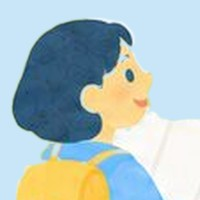

養成講座ガイド
キャリアコンサルタント養成講座は子育て中・働きながらでも通える？
「一度も休まずに出席できる」つもりで選ぶと、子どもの発熱ひとつで予定が崩れてしまいます。予定が崩れても続けられる学校を選びましょう。
更新日: 2026年10月15日情報確認日: 2026年7月11日
「子育てや仕事をしながら、本当に養成講座に通えるのかな」。わたしも申し込む前、いちばん迷ったのがそこでした。
子育てをしながら土曜のクラスで養成講習を修了した経験から言うと、大事なのは「休まず出られるか」より、「休んでも取り戻せる仕組みがあるか」です。
この記事では、学校を選ぶ前に確かめたい条件と、週あたりの学習時間の見積もり方をまとめました。
ANSWER
結論：子育て中・働きながらでも、通える？
「一度も休まない」つもりで選ぶより、「休んでも大丈夫」な学校を選ぶほうが、最後まで続きます。
PRこのページには広告(紹介リンク)がありますくわしく
- 広告・PR
- 右下の「無料説明会を見る」のボタンは、広告(紹介リンク)です。本文には紹介リンクを入れていません
- 紹介報酬
- 右下のボタンから説明会参加・申込みがあった場合、運営者が報酬を受け取ることがあります
- 学校からの無償提供
- 受けていません
- 受講料
- 運営者自身が支払っています
子育て・仕事と養成講座の両立でいちばん困るのは「欠席できない仕組み」
養成講習には出席時間の決まりがあり、休みが多いと修了できません。だからこそ、休むことがある前提で、まず「振替」のしくみを確認しましょう。何時間まで振り替えられるか、無料か、別の日に振り替えやすいかは、学校によって違います。
運営者が受講した講習では、80時間のうち16時間まで無料で振り替えられました(2026年7月に確認した公式サイトの情報です。最新の条件は公式サイトで確認してください)。
モヤン子どもって、だいたい大事な日の朝に熱を出すよね……。
サニー先生なぜか、そういうものなんだよね。だから「休まない計画」より「休んでも取り返せる計画」。振替が何時間までできて、無料かどうかを、いちばん先に確かめよう。
働きながら通える養成講座の条件リスト
子育てや仕事と両立できるかどうかは、次の条件で確かめましょう。
- 振替のしくみ(何時間まで・無料か・どの日に振り替えられるか)
- オンラインで受けられるか(送り迎えや移動の時間を減らせるか)
- 土日・平日・夜のコースから選べるか
- 1回の講習の長さ(長時間まとめてか、短く分かれているか)
- 課題の量と出し方(家から夜遅くでも出せるか)
- 急に休んだとき、録画で補講できるか
- 試験対策講座の日程を選びやすいか
- オンライン授業のカメラのルール(子どもが画面に映っても大丈夫か)
運営者はオンラインの土曜クラスで受講しましたが、授業中に子どもが画面に映り込んでしまい、運営の方と相談しながら続けました。子どもが家にいる時間に受けるなら、カメラまわりのルールを説明会で聞いておくと安心です(受講体験記)。

ちゃん体験初日は子どもの顔が映ってしまって、注意を受けました。このままだと同じ時間帯では続けられない、と言われて、すごく戸惑いました。
ちゃん体験運営の方と相談して、お菓子やテレビで子どもの気を引く作戦で、同じクラスのまま全10回を続けました。お菓子代は、毎週3,000円くらいかかりました。
サニー先生子どもが学校や園に行っている平日の昼や、寝たあとの夜のクラスなら、お菓子代は浮くかもしれないね。カメラのルールは、申し込む前に説明会で聞いておこう。
養成講座の週あたりの学習時間を見積もる
講習の時間のほかに、課題や予習・復習の時間も必要です。全部でどのくらいかかるかはコースや人によって大きく違うので、ここでは言い切れません。ただ、「講習+数時間の自習」が毎週続くつもりで予定を立てておくと安心です。
家族との調整は、早めが肝心です。講習の日程が出たら、すぐにカレンダーに入れて家族と共有してしまいましょう。
ちゃん体験授業とは別に、通信の添削課題が200問あって、4回に分けて出しました。調べながら埋めるので精一杯で、コツコツやらないと本当に時間がなかったです。
サニー先生課題の締め切りが来る週は、家族にも先に伝えておこう。「この日はわたしの宿題の日」と決めてしまうのも手だよ。
課題の数と出し方は、ちゃんが2026年に受けた講習のものです。学校によってちがいます。
完璧を目指さない
子育てしながらの受講は、予定どおりにいかないのが当たり前です。振替や録画、仲間のノートに助けてもらいながら修了する人はたくさんいます。「休んだら終わり」にならない学校を選ぶことが、いちばんの両立のコツです。
ちゃん体験じつは、わたしも最終日には出席できませんでした。それでも、修了のための試験を受けて、そのまま修了できました。
サニー先生完璧じゃなくていいんだよ。大事なのは、つまずいたときに戻れる道がある学校を選ぶこと。それが、いちばんの両立のコツだね。
よくある質問
Q子どもの発熱で休んだら、修了できなくなりますか？
A養成講習には出席時間の決まりがあり、休みが多いと修了できません。何時間まで振り替えられるか、無料かどうかなど、振替のしくみを先に確認しておきましょう。
Q運営者が受けた講習の振替は、どうでしたか？
A80時間のうち16時間まで、無料で振り替えられました(2026年7月に確認した公式サイトの情報です)。最新の条件は、公式サイトで確認してください。
Qオンライン授業で、子どもが映ってもいいですか？
A学校によります。運営者は映り込みで注意を受け、運営の方と相談しながら同じクラスで続けました。カメラのルールは、説明会で確かめておくと安心です。
Q週に、どのくらいの時間が必要ですか？
Aコースや人によって大きくちがいます。「講習＋数時間の自習」が毎週続くつもりで、予定を立てておくと安心です。
Q働きながら通える学校は、どう選べばいいですか？
A振替のしくみ、オンラインで受けられるか、土日・平日・夜のコースから選べるか、課題の量と出し方、録画で補講できるか、カメラのルールなどを確かめましょう。